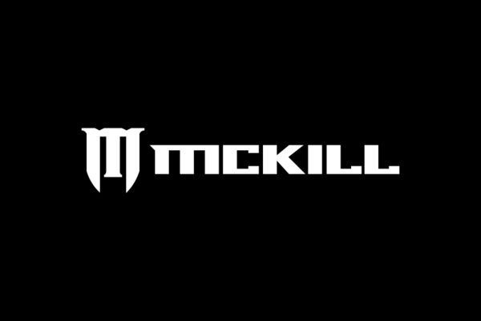

McKill Identity
Denmark-based illustrator and designer Casper Iversen designed a mock identity and campaign for the Australian surf and skate brand McKill as a project while finishing his BA in Graphic Communication at Skolen for Visuel Kommunication. Fresh out of school Casper definitely has a solid future in design.
Via Behance